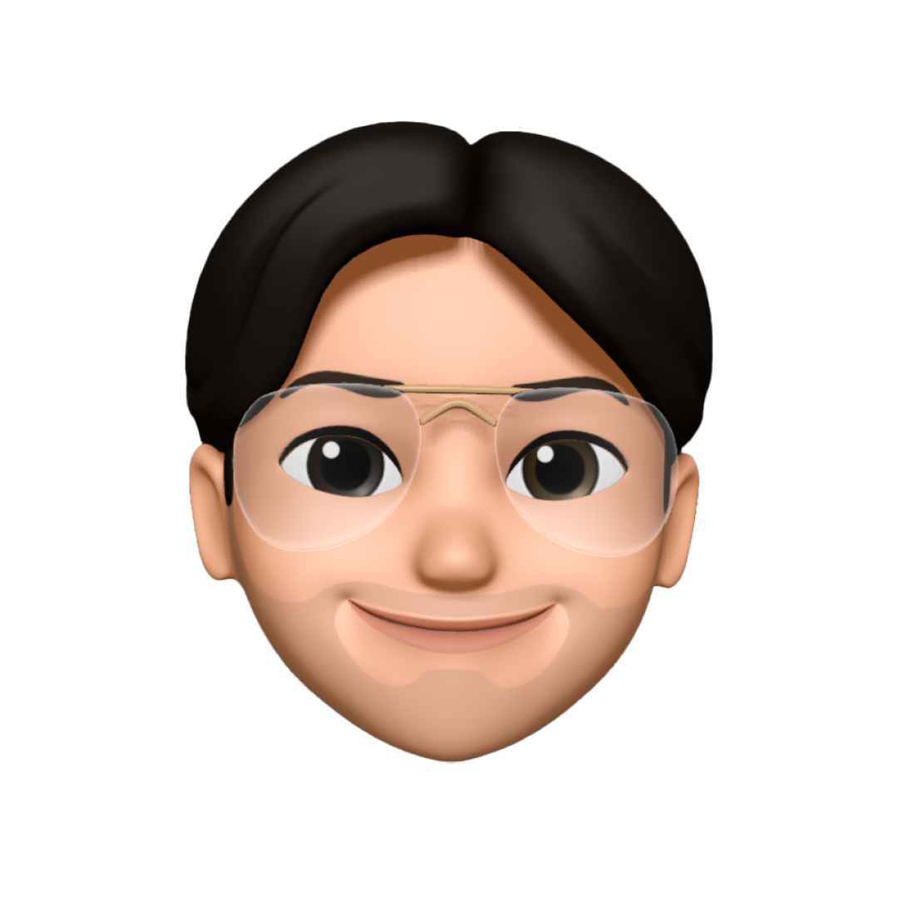

Juan Santillán
FullStack Developer / Cervecería de la Costa
El Motor Invisible de la Web:
Event Loop
¿Event Loop?,
¿neta, wey?,
qué aburrido
- JavaScript hace una sola cosa a la vez: tiene un solo hilo.
- El problema: si algo tarda (un timer, una petición al servidor), todo lo demás tendría que esperar.
- La solución: JS no espera. Delega lo que tarda, sigue con lo demás y lo retoma cuando ya está listo.
- ¿Y quién decide cuándo retomarlo? El Event Loop: un ciclo eterno que revisa sin parar si hay algo listo para ejecutar.
- Gracias a él, JavaScript no se congela mientras espera.
- Y explica cosas "raras", como por qué setTimeout(fn, 0) no se ejecuta de inmediato, o por qué las Promises corren antes que los setTimeout.
Vamos a explicar
algunas cositas
de JavaScript…
JS es single-threaded:
Solo puede ejecutar una instrucción a la vez
JS es síncrono:
El código se ejecuta línea por línea, en orden
JS maneja asincronía con el Event Loop:
Los callbacks esperan a que el hilo esté libre
Callback: Una FN que pasas a otra FN para que esa la ejecute después
Síncrono:
Código que se ejecuta línea por línea, al instante. Bloquea, porque espera a que todo termine.
console.log('1');
console.log('2'); // Espera a que 1 termine
Asíncrono:
Código que se programa y ejecuta después.
No bloquea.
setTimeout(() => console.log('2'), 0);
console.log('1'); // No espera a setTimeout
// Output: 1, 2
¿Todo chido
hasta aquí? :)
Call Stack
Event Loop
Web APIs
Colas de tareas
(Micro y Macro)
Call Stack:
- Es una pila LIFO (último en entrar, primero en salir).
- Es donde se ven las funciones/ operaciones que el hilo está ejecutando.
- Es bloqueante PORQUE el hilo de JS solo puede hacer una cosa a la vez.
- Es una visualización del trabajo del hilo, no quien controla el flujo.
Call Stack
Event Loop
Web APIs
Colas de tareas
(Micro y Macro)
Event Loop:
- Ciclo eterno que revisa si el Call Stack está vacío.
- Es el vigilante que coordina TODO.
- Sin él, JavaScript no sería asíncrono.
Call Stack
Event Loop
Web APIs
Colas de tareas
(Micro y Macro)
Web APIs:
- No son parte de JS.
- Servicios del navegador que hacen trabajo en paralelo.
- Timers, Network, DOM.
Call Stack
Event Loop
Web APIs
Colas de tareas
(Micro y Macro)
Callback queue
Macrotask Queue:
- Cola para Web APIs.
- Se ejecuta UNO por ciclo.
- Prioridad BAJA.
Ejemplos Macro Tasks (Web APIs):
- setTimeout(() => {}, 0);
- setInterval(() => {}, 1000);
- fetch('/url');
- addEventListener('click', ...);
- XMLHttpRequest;
Microtask Queue:
- Cola para Promises.
- Se ejecutan TODOS por ciclo.
- Prioridad ALTA.
Ejemplos Micro Tasks (Promises):
- Promise.resolve().then(() => {});
- Promise.reject().catch(() => {});
- Promise.finally(() => {});
- Promise.resolve().then(() => {});
¿Qué se imprime?
Levanta la mano por tu respuesta
console.log("A");
setTimeout(() => {
console.log("B");
}, 0);
console.log("C");
1A, B, C
2A, C, B
2A, C, B✓
3B, A, C
¿Qué se imprime?
Levanta la mano por tu respuesta
setTimeout(() => {
console.log("A");
}, 0);
Promise.resolve().then(() => {
console.log("B");
});
console.log("C");
1A, B, C
2C, A, B
3C, B, A
3C, B, A✓
¿Qué se imprime?
Levanta la mano por tu respuesta
setTimeout(() => {
console.log("A");
}, 0);
Promise.resolve()
.then(() => {
console.log("B");
})
.then(() => {
console.log("C");
});
1A, B, C
2B, A, C
3B, C, A
3B, C, A✓
Cada vez que tu app se congela,
el Event Loop te está diciendo algo.
En resumen:
- JavaScript hace una sola cosa a la vez: tiene un solo hilo.
- Lo que tarda se delega a las Web APIs, y JS sigue con lo demás.
- El Event Loop es el ciclo eterno que decide qué se ejecuta y cuándo.
- Primero todas las microtasks (Promises), luego una macrotask (setTimeout, eventos) por ciclo.
¿Aburrido? Tal vez.
Pero está detrás de cada clic,
cada fetch y cada app que usas.
Hoy la IA escribe código en segundos.
Pero cuando algo falla, alguien tiene que saber
cómo funcionan los fierros.
Sé esa persona.
El Event Loop
nunca se detiene.
Que tu curiosidad tampoco.
1 / 32
Controles
| → Espacio Clic Rueda ↓ | Slide siguiente |
| ← Clic derecho Rueda ↑ | Slide anterior |
| Mover el mouse | Controles de la animación |
| Inicio Fin | Primera / última slide |
| F | Pantalla completa |
| H | Mostrar / ocultar esta ayuda |